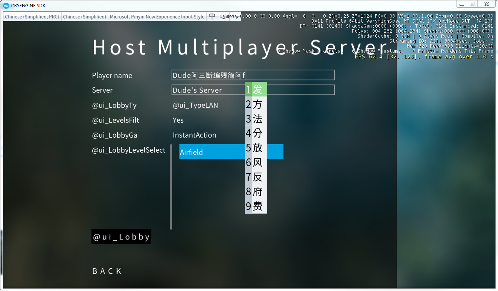

IME support in the UI
Some languages (such as Chinese) have on-screen helpers and various keyboard layout functions to help with text input.
This feature is supported by Scaleform as well.
Please refer to Enabling IME in code to see if your version is supporting IME.
Checking for IME support
To check that IME support is available, use the GameSDK sample project's main menu in the game launcher.
By going to "Multiplayer" and then "Host Server" menu, you have some text fields to enter text.
Depending on the current language setting of the OS, you will be presented with various options.
For example, with input language set to Chinese it should look similar to the below screenshot:

Updating Flash files for IME support
In the GameSDK/Libs/UI/FlashAssets/cryflash folder will be a file LanguageBar.as that wraps the language bar functionality.
This allows you to easily implement support for this feature in other Flash files.
The default UI framework will activate the language bar when a text field is being written to.
Note: The IME candidate-list file has been created to import from the SDK's default font library (HUD_Font_LocFont.gfx).
From this file it will read the Font_Body ActionScript symbol to render glyphs.
For additional information on font importing and exporting read also UI Localization